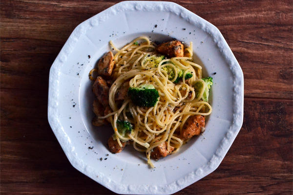

Przepis 2
Spaghetti z kurczakiem i brokułami

1.piersi kurczaka pokroić na małe kawałki, obtoczyć w soli z chilli
2.Rozgrzać patelnię grillową, nalać łyżkę oliwy z oliwek i obsmazyć kurczaka
3.Przygotowac garnek do gotowania na parze, ugotowac makaron
4.Do patelni z kurczakiem dorzucić makaron z ugotowanymi brokułami
5.Roztopić ser gorgonzola i polać spaghetti
6.SMACZNEGO!